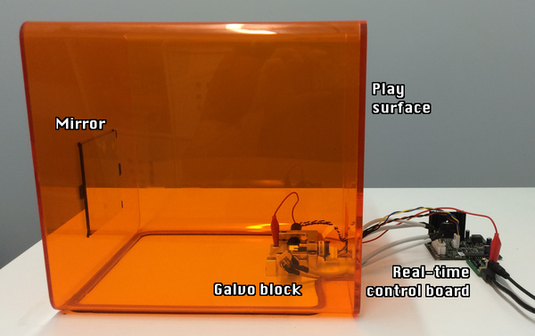
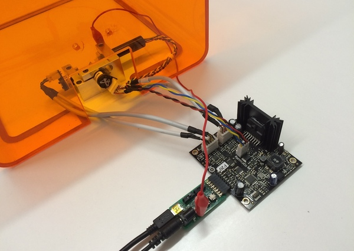
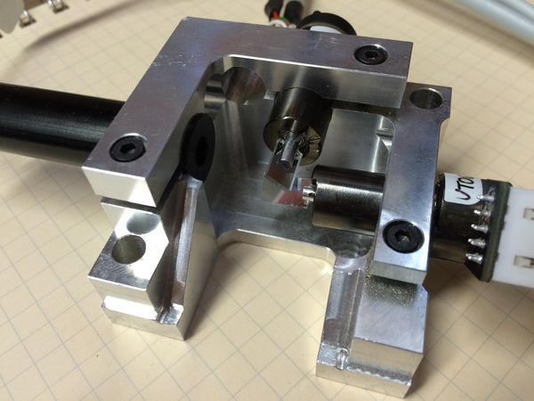
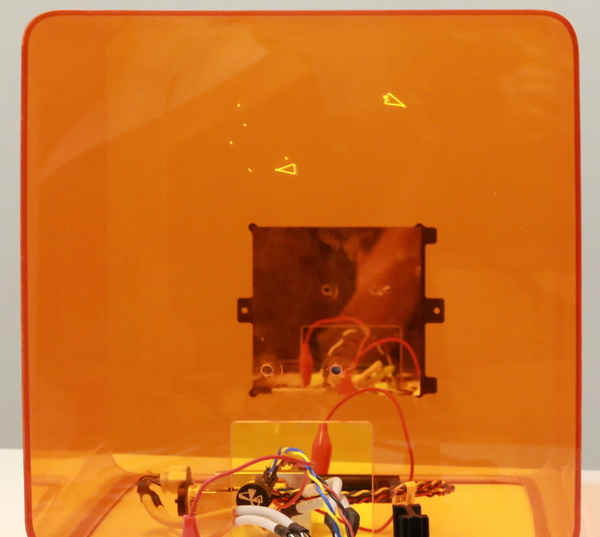
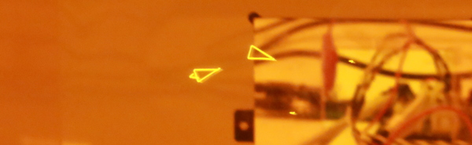
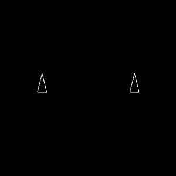

overview
spacewΛr is a Haskell implementation of the classic video game. It is backend-agnostic, adaptible to any device that can draw a set of vectors.
The most interesting vector-graphics system I have access to is the optical engine from a Form 2. In normal use, this system is responsible for scanning a laser into a vat of light-sensitive resin, selectively curing it to build up a solid model.
Here, we'll repurpose it to play video games with real lasers!
hardware
The Form 2 optical engine controls two galvonometers and a laser. The laser draws 2D cross-sections of a 3D model, selectively curing a UV-sensitive resin (a process known as stereolithography). By building up layer after layer, the printer creates solid objects from a vat of goo.
Here's the annotated setup:

The real-time control board is a piece of custom hardware from the Form 2, designed to quickly and precisely steer the galvos. It's plugged into an adapter board that allows me to talk to it from my computer; in normal use, it plugs into the Form 2 motherboard.

The galvos are held in a machined metal block. Each one controls an axis of motion. The laser bounces off the X galvo then the Y galvo on its way to the optical window or screen.

The whole system is stored in a Form 1 cover for laser safety
The laser reflects off a mirror mounted in the back of the case; the front of the case acts as a display surface. Through the orange case, the blue-violet laser has a greenish tint:

code
The source for spacewΛr is available on Github. The code is rough around the edges but still functional; I'm a Haskell novice, but the system works well enough.
The system tracks an arbitrary number of Ship and Shot objects, stored as
lists in a State (no relation to the monad).
Updates are handled by OpenGL callbacks (using Graphics.UI.GLUT).
The keyboard callback updates an IORef [Word8], representing a bitmask of
pressed keys for each player; the idle callback updates an IORef State based
on player inputs and rudimetary 2D physics.
When a Ship is hit by a Shot, it becomes a DeadShip, containing a list
of Fragments that slowly shrink to nothingness. When only one live Ship
(and no Fragments) remain, the game restarts.
The game's State can be converted into a list of vector shapes using
draw :: State -> [[V2f]]
I wrote a Haskell interface to the Form 2's real-time subsystem (which required
fixing a bug
in the bindings-libusb package).
This interface takes a set of vector shapes and transfers positions and laser power
to the galvo controller.

To discourage people from disassembling their printers (and voiding their warranties), the repository is released with an OpenGL-based backend to try out at home:
